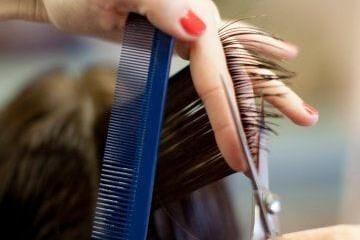
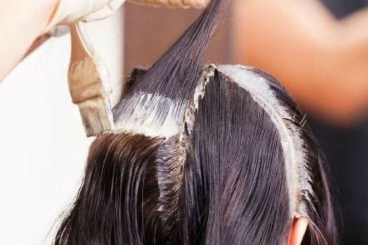
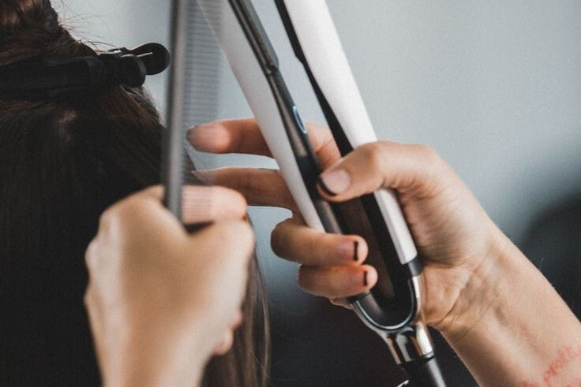

Gallery

Potong Rambut
Dimulai dengan konsultasi gaya untuk memastikan potongan sesuai dengan bentuk wajah dan keinginan
Anda. Rambut kemudian dipangkas dengan teknik presisi oleh penata rambut berpengalaman, diikuti
dengan penataan akhir untuk hasil yang rapi dan memukau. Cocok untuk semua jenis rambut dan
kebutuhan, mulai dari potongan sederhana hingga gaya modern yang trendi.

Warnain Rambut
Dimulai dengan konsultasi warna untuk menyesuaikan hasil yang diinginkan dengan warna kulit dan gaya
pribadi. Rambut kemudian diolesi cat secara merata, menggunakan formula khusus yang menjaga
kesehatan dan kelembapan rambut. Setelah proses pewarnaan, rambut dibilas dan diberi perawatan
tambahan untuk mempertahankan warna yang tahan lama dan berkilau. Cocok untuk pewarnaan penuh,
highlight, atau tren seperti balayage dan ombre.

Hair Spa - Perawatan menyeluruh untuk menutrisi dan melembapkan rambut.

Catok Rambut
Dimulai dengan mencuci dan mengeringkan rambut untuk memastikan hasil yang maksimal. Kemudian,
rambut dicatok secara bertahap menggunakan alat berkualitas tinggi yang melindungi dari panas
berlebih, sehingga rambut tetap sehat dan tampak berkilau. Layanan ini cocok untuk memperbaiki
rambut kusut, menciptakan gaya elegan, atau sebagai sentuhan akhir setelah pemotongan atau
pewarnaan.